Char-RNN
条评论一、Char RNN
项目链接： https://github.com/karpathy/char-rnn
二、搭建环境
- ubuntu-16.04.3-desktop-amd64
下载地址：http://releases.ubuntu.com/?_ga=2.207074835.1052515424.1521179633-1053557833.1513924047 - 在已安装好的ubuntu环境下，安装相关模块
- 安装git ，命令： sudo apt install git
- 安装 curl，命令：sudo apt install curl
- 安装 cmake，命令：sudo apt install cmake
- 安装luarocks，命令：sudo apt install luarocks
- 依此执行以下命令：
- curl -s https://raw.githubusercontent.com/torch/ezinstall/master/install-deps | bash
- git clone https://github.com/torch/distro.git ~/torch –recursive
- cd ~/torch
- ./install.sh 这里执行后，需要输入” yes”
- source ~/.bashrc
- 然后执行以下命令：
- luarocks install nngraph
- luarocks install optim
- luarocks install nn
- Reboot
三、基础使用方法
将从github 上下载的Char RNN项目，解压放到部署 的Ubuntu的环境中，打开文件夹。
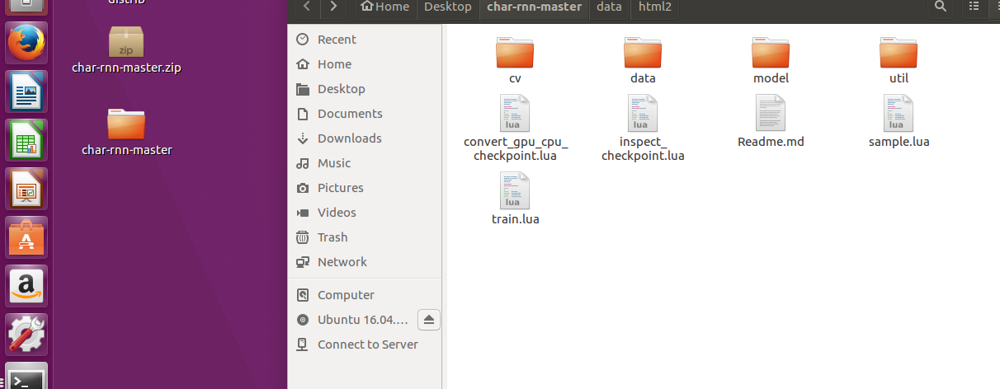
起一个终端，执行命令：th train.lua –gpuid -1
用于测试环境是否搭建好
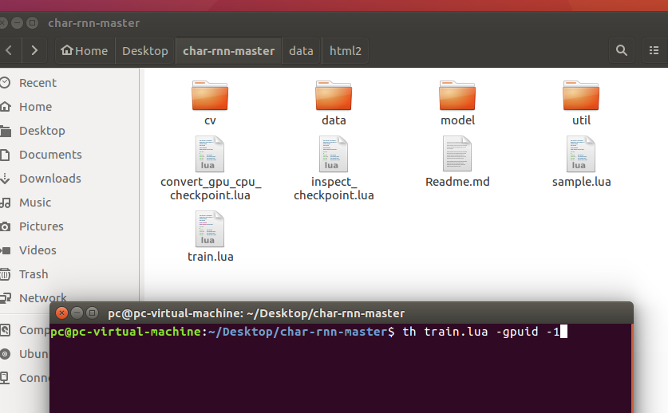
若搭建完成，如下图，将会开始学习：
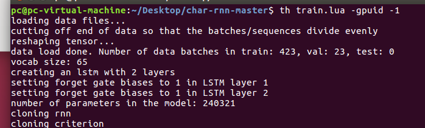
学习的样本，默认从 data/ tinyshakespeare/ 下取得名为 input.txt的文件，执行时，程序会自动生成另外2个文件 ：data.t7 ，vocab.t7 。
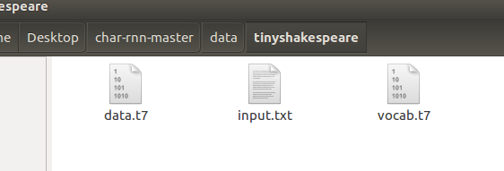
四、用户自定义使用方法：
输入命令： th train.lua –help 可以查看相关参数。
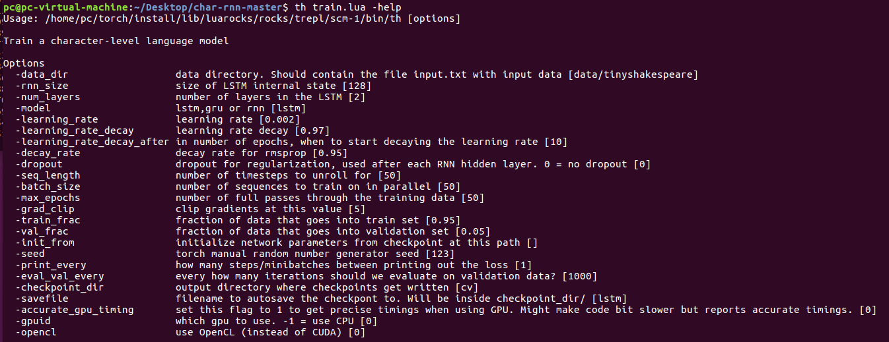
常用参数：
- data_dir ：用户提供自定义样本的目录 ，比如： data/html/
- rnn_size ：LSTM 内部状态的大小，默认为 128（可根据提供的数据大小进行改变，数据量很大，可以增大改值）
- num_layers： LSTM 的层数，默认是2（可根据提供的数据大小进行改变，数据量很大，可以增加层数）
举例：若样本数据有 6 MB，那么可以设置 –rnn_size 600 ，-num_layers 3。
- model：使用模式，可以是 lstm，rnn，gru，默认是rnn。
- gpuid：使用学习的方式，-1 对应使用CPU进行训练，0对应使用GPU进行训练；默认是 0。
举例：自定义的样本路径为 data/html/input.txt
【注意：提供的样本须命名为 input.txt 文件。】
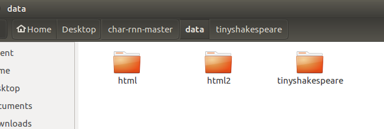
那么，我们使用 lstm模式，并用CPU进行训练，训练的样本在 data/html 下，则使用的命令应该是：
th train.lua –data_dir data/html/ -model lstm –gpuid -1
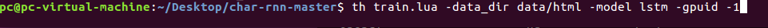
最后运行完成之后：
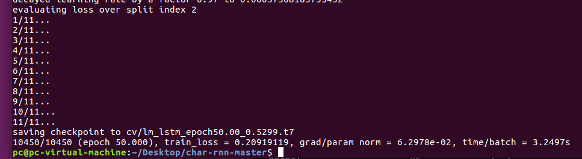
五、学习后生成的样本
当开始进行训练时，会不定期的向 cv 文件夹里写入检查点文件，如下图：
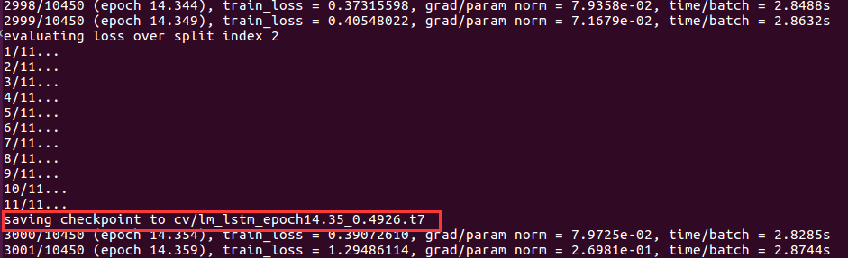
学习后的样本生成就来源于这些检查点文件。
首先，使用命令：th sample.lua –help
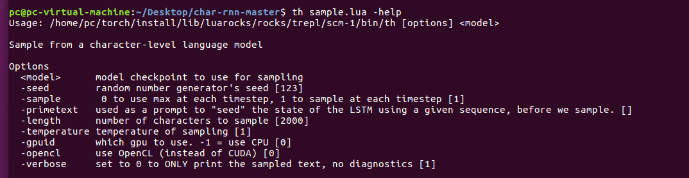
使用命令： th sample.lua cv/lm_lstm_epoch50.00_0.5299.t7 -gpuid -1
上述命令表示，用CPU生成基于检查点 cv/lm_lstm_epoch50.00_0.5299.t7 的新样本。如下图：
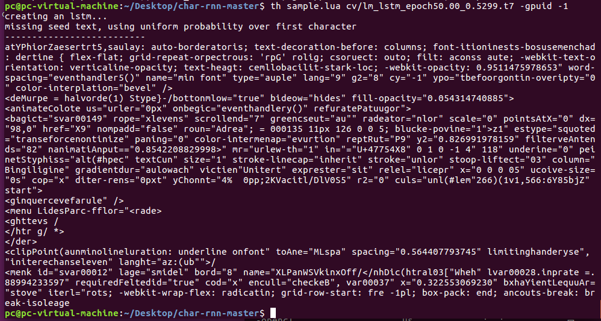
六、参数的具体解释
1．th sample -help
- seed 随机数发生器种子,默认是[123]
- sample 0:在没个时间步长都使用max； 1： 在每个时间步使用1个样本； 默认[1]
- primetext 在生成样本之前，提示 LSTM 的状态，用给定序列的 seed 。
- length 生成的样本字符数，默认是[2000]
- temperature 温度参数，默认[1]
- gpuid -1：使用CPU; 0：使用GPU ; 默认[0]
- opencl 使用 OpenCL 代替 CUDA ，默认[0]
- verbose 设置位0就只生成样本文本，不进行错误的判断。默认[1]
2．th train.lua -help
- data_dir 数据目录。 包含训练的文件input.txt [data / tinyshakespeare]
- rnn_size LSTM内部状态的大小 [128]
- num_layers LSTM中的隐藏层数 [2]
- model 训练的模式 lstm,gru,rnn [lstm]
- learning_rate 学习效率[0.002]
- learning_rate_decay 学习率衰减[0.97]
- learning_rate_decay_after 在学习到第几轮的时候,开始衰减学习效率。默认是第 [10] 轮，如下图：
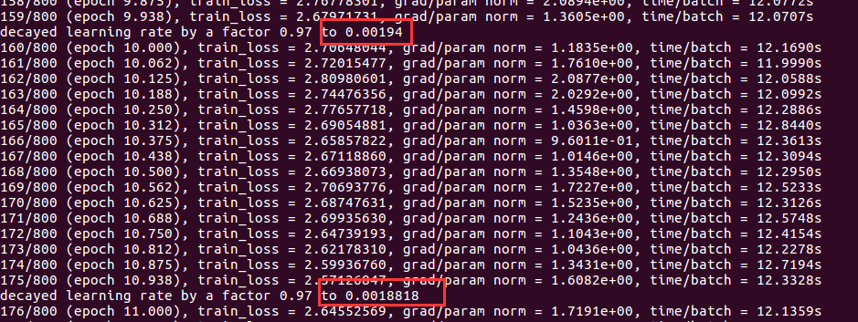
- learning_rate_decay_after 在学习到第几轮的时候,开始衰减学习效率。默认是第 [10] 轮，如下图：
- decay_rate rmsprop 的衰减率 [0.95]
dropout 用于正则化的 dropout ，在每个RNN隐藏层之后使用。 0 = no dropout 。[0]
// dropout 当培训损失远低于验证损失，那么这意味着神经网络可能 overfitting。解决方案是减少network size,或增加dropout. 比如 dropout >= 0.5
// 如果您的训练/验证损失大致相等，那么模型就不合适了。增加模型的大小（层数或每层神经元的原始数量）seq_length 指定每个流的长度，这也是梯度可以在时间上向后传播的极限 [50]
- batch_size 指定一次并行处理多少数据流 [50]
- max_epochs 通过数据进行完整训练的次数 [50]
- grad_clip 使用改值进行剪辑渐变 [5]
- train_frac 用于训练的数据所占百分比 [0.95]
- val_frac 用于估算验证损失的数据占比 [0.5]
- init_from 以前保存的检查点初始化参数，跟上检查点路径
- seed 手动设置 torch 的随机数发生器种子 [123]
- print_every 在打印出损失之间经过多少 “steps/minibatches” [1]
- eval_val_every 写入检查点的频率由迭代次数控制,如果这是1则每次迭代都会写入一个检查点[1000]
- checkpoint_dir 输出目录，其中写入检查点 [cv]
- savefile 用于自动保存checkpont的文件名。 将在checkpoint_dir /里面 [lstm]
- accurate_gpu_timing
将此标志设置为1可在使用GPU时获得精确计时。 可能会使代码位变慢但报告准确的时序。 [0] - gpuid which gpu to use. -1 = use CPU [0]
- opencl use OpenCL (instead of CUDA) [0]